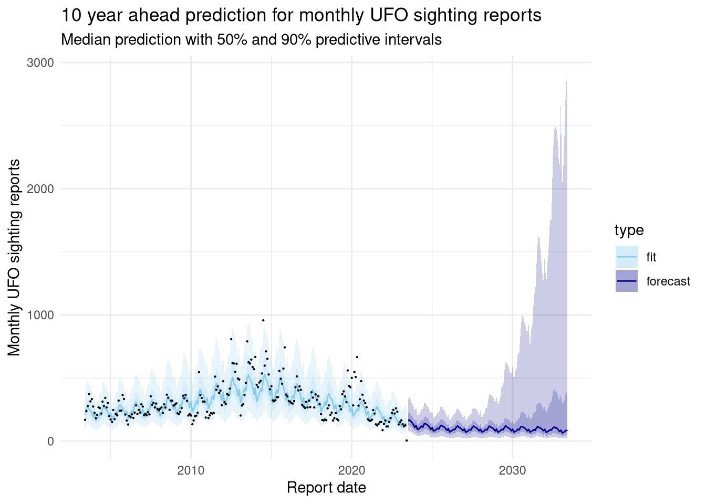

Using epidemiological forecasting methods to predict the number of reported UFO sightings
Published
November 16, 2026
This can’t be serious???
Okay so this isn’t mega serious but this data is real. A few years ago a wrote a Jumping Rivers blog post about using Stan to model global UFO sightings reports. The #TidyTuesday project has used this data set before to prompt some fun visualisations. I used splines in time and a negative binomial distribution to model a reporting pattern.
A few years have passed since then and I’ve been working in epidemiology for a while. A common statistical approach to short term forecasting (forecasts of up to about 4 weeks ahead) for epidemics is to use splines in time and a negative binomial distribution to describe key quantities of interest. For example, the number of cases of a novel pathogen reported daily by some geographical region (e.g. different countries, or in the US we might model disease dynamics at state level).
I’ve gotten used to working with that kind of data and I’ve been itching to revisit that blog post with 3ish years worth of epidemic modelling under my belt. The analysis I’ll be doing here will be based upon open source code from the modelling I do in my day job.
The plan here is to build a mini epidemiological-style modelling pipeline to predict the number of UFO sighting reports at various locations. We will need need a little primer on ensemble modelling and GAMs, but before we do that, let’s have a look at the data.
Some data exploration and wrangling
A really important thing to stress here is these are reports of UFO sightings. It doesn’t mean someone actually saw a UFO. But it doesn’t mean that they didn’t see one either …
The data is available on the TidyTuesday github repo.
An object in the shape of a straight line about an inch from our viewing area moving slowly across the sky
2022-08-13 05:30:00
US
Tone in the air.
2022-08-06 21:00:00
US
Black tic-tac shaped ufo. Moved with insane speed
2022-08-04 07:40:00
US
Two alien were scanning me
2022-07-22 16:00:00
US
Long cigar solid shaped craft with light beam
I’ve not displayed all the data here, just a few rows to get a feel for things. We know when and where the report was made, and we have a bit of an eye witness report. Apparently one UFO looked like a black tic-tac moving at insane speed, and apparently someone was even scanned by two aliens!
I need to reshape this data to make modelling possible. In epidemiology, we often have a “line list” which is a bit like our set of reports. Each row will be the result of a test for a particular disease, as well as information about when the test was taken and information about who took the test (for example, their age and biological sex). Here we have a time of a report and a location – this is our line list!
For modelling and patient-privacy reasons, we almost always work with a set of daily case totals rather than line lists. I’m therefore going to count up the number of reports made each month in each country, but I am going to restrict this analysis to countries who have reported at least 200 sightings. This is going to simplify the analysis later on as we will be working with fewer regions, but the overall principles, code, and mathematical ideas generalise, it’s basically just a case of scaling compute. In general, it’s a bad idea to omit a region solely due to infrequent or low reporting.
After a bit of wrangling we can get our data into a format which is the total number of reports per month, per region
The scale of the reporting patterns is very different by region. In the US we see up to hundreds of monthly reporting sightings during the 2000s and 2010, but months other countries are reporting single or double-digit counts. However, there’s a similar shape in each country - very low counts up until about 1990, a peak somewhere in the 2000-2010s and a decline into the 2020s.
The modelling basics
There’s two main statistical concepts we will go over here. The first is ensembles, the seconds will be generalised additive models (GAMs). Fusing these two approaches has been a successful approach used by various epidemic modelling teams in public health organisations. These methods (as do many others!) allow us to make interval forecasts about the future: for example, “We forecast that on 18th December 2026, the median number of new cases of Michael Buble fever will be 50, with a 90% prediction interval of (32, 93) cases.”
Ensembles
Ensemble methods essentially take the predictions from multiple statistical models and combine them in the hope you achieve an overall more accurate forecast. Ensembles tend to be more robust than single-model predictions in two senses:
Statistically robust: different models encode different assumptions. By ensembling, we are not relying on a single set of assumptions for our analysis.
Operationally robust: code breaks, models sometimes behave weird, data feeds vanish with no prior warning. If we can’t get a model to run, or the output is not an epidemiologically plausible prediction, we can drop a models contribution to an ensemble and still output a forecast.
So when you’re fitting models every week to deliver to important people (politicians, scientists with Wikipedia pages, people who work to save lives), you really can’t afford to put all your eggs in one basket.
It is well known in the epidemiological forecasting literature that a diverse set of models tends to lead to a better ensemble. That means ensembling different assumptions as well as methods. Ensembles can include statistical models (e.g. GAMs - more on those later), mechanistic models like the SIR model, and classic time series model (e.g. ARMA). There’s plenty of other things you can throw in too!
Quantile averaging
There are two ways that are commonly used in my field to construct ensembles. In quantile averaging we take a set of quantiles from a set of models, then the quantiles of the ensemble are the average values of the quantiles from each contributing model. If \(q^m(p)\) is the \(p\%\) quantile of the prediction from model \(m\), then we can map the following component model quantiles to ensemble quantiles:
\[
\begin{pmatrix} q^1(0.05) \\ q^1(0.10) \\ \vdots \\ q^1(0.50) \\\vdots \\ q^1(0.90) \\ q^1(0.95) \end{pmatrix},
\begin{pmatrix} q^2(0.05) \\ q^2(0.10) \\ \vdots \\ q^2(0.50) \\ \vdots \\q^2(0.90) \\ q^2(0.95) \end{pmatrix},
\ldots,
\begin{pmatrix} q^M(0.05) \\ q^M(0.10) \\ \vdots \\ q^M(0.50) \\ \vdots \\ q^M(0.90) \\ q^M(0.95) \end{pmatrix}
\overset{\text{ensemble}}{\rightarrow}
\begin{pmatrix} \bar{q}(0.05) \\ \bar{q}(0.10) \\ \vdots \\ \bar{q}(0.50) \\ \vdots \\\bar{q}(0.90) \\ \bar{q}(0.95) \end{pmatrix}
\] Here we’ve used the mean to average the quantiles. The median of the quantiles might also be used.
The method is great for “forecasting hubs”. Lots of public health agencies allow modelling teams to submit there own forecasts of a epidemic as a collection of quantiles, then the hub aggregates the submitted predictions and outputs ensemble. For example, the US’s CDC had a COVID-19 forecasting hub. It’s an efficient way to construct ensembles, however, the mean of a collection of quantiles is not the same as the “true” quantile of the ensemble.
Posterior stacking
Suppose I can generate predictive samples from my model. For most statistical models, this is quite simple as we’ve assumed some statistical form and then fit a model to the data. If we then generate \(N\) samples from each the \(M\) ensemble models, we then have \(N \times M\) samples, from which we can compute quantiles.
The nice thing about posterior stacking is it gives us a coherent forecast when we have breakdowns in our predictions. It’s not uncommon for the spread of a disease through a population to somehow depends on the characteristics of sub-populations. For example, very young or very old people tend to have weaker immune systems so are more likely to have severe symptoms of a disease. Some countries or regions within a country take different approaches to public heath (for reasons which might be political choices or driven by the availability of resources) and therefore we expect an epidemic to be worse in some locations compared to others.
We might want forecasts of individual regions within a country, but then also want a national forecast. To obtain a national forecast we just sum the regional forecasts. If we used a quantile-averaging approach the quantiles of the sums might not equal the sums of the quantiles, but if we sum samples and then compute quantiles, we obtain a coherent forecast. The downside of this approach is submitting lots of samples to a hub can get a bit messy, so the stacking method is often preferred by those producing ensembles “in house”.
Generalised additive models
At work, my bread and butter modelling approach to modelling an epidemic is to use a GAM. GAMs are handy because they can fit flexible curves to complex data, but with modelling software like {mgcv}, the fitting of these models is pretty fast! “Fast” is subjective, but with the computing facilities I have access to, I can fit a GAM to the data I am working with in anywhere from a the blink of an eye to a couple of minutes – an ideal time frame for real-time modelling.
Anyway, in the type of work I do, I might model the number of hospital admissions, \(y(t, r)\) at time \(t\) in region \(r\) as:
\[
y(t, r) \sim \text{NegBin}(\mu(t, r), \varphi)
\]\[
\log( \mu(t, r)) = s(t) + s_r(t) + \text{wday}_t + \text{other effects}
\] where \(s(t)\) is a “global” smoother, \(s_r(t)\) is a regional smoother, \(\text{wday}_t\) is a day of week effect and we might have some other effects in the model too, e.g. information about correlated variables such as internet searches for symptoms or weather variables.
I think this structure would be a great fit for the UFO sighting data, so lets get onto building some models …
A first model
Having taken a look at the data, it’s likely we have an effect for each month, and some smooth temporal variation by region.
My first GAM is going to be a Gaussian Process (GP) based model, with a fixed effect for country and random effect for month. In R, that might look like this
where t_numeric is our time variable, country_code is a factor representing the country, transformed_lengthscale is a hyperparameter of our GP and input_data is our data used to fit the model. This corresponds to a model with only regional smooths (so no \(s(t)\)) term.
I’m not going to walk through all the other models I build for this analysis, but they’re GAMs with different approaches to smoothing. You can investigate the model details here.
What is really important across our suite of ensemble models is a consistent set of inputs and output from the model: we can then apply the same pre and post processing model inputs and outputs.
For this very simple sample we will have models that look a bit like this
example_model <-function(input_data, prediction_length, training_length) {# model-specific wrangling/preprocessing# fit model to data# post-process model outputs# output data frame with common column formatting}
In my models, the columns are
.row a “spine” for internal modelling
.draw an ID for the posterior sample draw
.reponse the predicted value (for that sample-location-time combination)
month_year the date
country_code ID for the country
sightings_month when known, the actual number of sightings at that date for that country
t_numeric a numerical version of the date for modelling
month the month of the year
type a string which is either "fit" or "forecast"
name a string to identify the model
This consistency means my model post-processing and ensembling is fairly straight forward.
Fitting the ensemble
The following collapsed snippet reads all the models in straight from my github repo - ideally I’d wrap this all up in a package or something but this is quick and easy. I wouldn’t advise running source() on any old files off the internet normally. I’m also going to store all my model functions in a list for a neat functional-programming approach to model fitting later.
I will have an ensemble based on four models. GAMs with the following smoothers: Gaussian process, thin plate splines, cubic regression splines and p splines.
Show code
gh_root <-"https://raw.githubusercontent.com/jcken95/unidentified-forecasting-object/refs/heads/main/models/"# specify model filesmodel_files <-paste0(gh_root, c("gaussian_process", "thin_plate", "cubic_regression", "p_spline"), ".R")# extract the names of the models from these filesmodel_names <- purrr::map( model_files, \(.m) { .m |> stringr::str_remove(gh_root) |> stringr::str_remove("/") |> stringr::str_remove(".R") })# read in the models and give the resulting list elements useful namesmodels <- purrr::map(model_files, \(m) source(m)$value)names(models) <- model_names
Anyway, let’s get our data model-ready then see what our first prediction looks like. We’re going to first fit our model on data up to 1st January, 2010 and check our forecast visually against the data. We will forecast 24 periods ahead. With monthly data, this means we are forecasting UFO sighting reports over a two-year window.
model_ready <- ufo_complete |># basically zero monthly sightings before this date dplyr::filter(month_year >= lubridate::ymd("1990-01-01")) |> dplyr::arrange(month_year) |> dplyr::mutate(t_numeric = dplyr::row_number(),.by = country_code ) |> dplyr::mutate(month = forcats::as_factor(format(month_year, "%B")),country_code = forcats::as_factor(country_code))# going to leave the end of the datafit_data <- model_ready |> dplyr::filter(month_year < lubridate::ymd("2010-01-01"))
By and large, we’ve made a good little set of forecasts here based off one model. The prediction for GB definitely overshoots by quite a bit, but otherwise we see observed values are usually within the limits of the prediction intervals. We also capture seasonal effects (where present) quite well.
Building up an ensemble
Now we’ve built a single-model forecast, we want to scale up to an ensemble-based workflow. I’m going to use the {purrr} package and a neat little trick to generate our ensemble with (excluding the model functions themselves), just two function calls!
If you’re not familiar with {purrr}, purrr:map() lets us iterate over elements of a list, it’s basically an implementation of a for loop or reframing of apply() type functions. Remember earlier I stored all my model functions in a named list called models? Well I can purrr::map() over these models and stack all the results in a data frame to create our ensemble. I’d used purrr::map() a lot in the past to iterate over data (e.g. apply the same functions to different data sets), but the first time I saw the inverse: apply different functions to the same data I thought that was actually pretty cool.
model_fits <- models |># fit each element of models to the data (and generate a forecast) purrr::map(\(.m) .m(fit_data, forecast_horizon)) |># stack the predictions up in to a single data frame dplyr::bind_rows()
And that’s it, model_fits is literally our ensemble. We can then compute summaries of this set of samples to visualise and communicate our forecasts. You can expand the below code, but the idea is basically the same as for a single model since we’ve used posterior stacking to construct our ensemble.
And that’s our set of national UFO sighting report forecasts – to be honest in this case they’re not too dissimilar to the Gaussian process forecast. The ensemble seems to be a bit smoother, and we’re still overshooting the true number of reports in GB. It’s likely we could improve this forecast significantly with model tuning, but that’s beyond the scope of what I want to do here.
Finally, we can produce a “Global” forecast based off the subset of countries we’ve constructed our ensemble on. It’s not a true global forecast as we have only modelled a small number of countries. Since we’re using posterior stacking, our global forecast is literally just the sum of the national forecasts, just remember to compute quantiles after aggregating for coherence.
# add up predictions across each countryensemble_summary_global <- model_fits |> dplyr::summarise(.response =sum(.response),.by =c(month_year, name, .draw, type) ) |> dplyr::summarise(pi_05 =quantile(.response, 0.05),pi_25 =quantile(.response, 0.25),pi_50 =quantile(.response, 0.50),pi_75 =quantile(.response, 0.75),pi_95 =quantile(.response, 0.95),.by =c(month_year, type) ) |> dplyr::left_join(# we need national sums of true data too model_ready |> dplyr::summarise(sightings_month =sum(sightings_month), .by = month_year),by =c("month_year") )
Our global ensemble forecast is pretty good! In my own experience, aggregate forecasts are usually more reliable than the lower-level forecasts as the overall curve is a bit smoother, and the weird local variations get diluted in the bigger picture.
It’s great that we’ve produced something that can produce a reasonable retrospective forecast of UFO sighting reports, but what can we expect to happen into the future? This data only goes up to 2023, so let’s make a 10-year ahead forecast to bring us up to 2033. This is a much longer forecast horizon than we would usually make with this kind of model! All we do here is modify our forecast horizon and then make sure we using all available data (rather than chopping time off to do a retrospective fit). I’ll just do this at the global level, but the logic transfers to national-level forecast in a similar way.
Show code
forecast_horizon <-12*10forecast <- models |># fit each element of models to the data (and generate a forecast) purrr::map(\(.m) .m(model_ready, forecast_horizon)) |># stack the predictions up in to a single data frame dplyr::bind_rows()ensemble_forecast_global <- forecast |> dplyr::summarise(.response =sum(.response),.by =c(month_year, name, .draw, type) ) |> dplyr::summarise(pi_05 =quantile(.response, 0.05),pi_25 =quantile(.response, 0.25),pi_50 =quantile(.response, 0.50),pi_75 =quantile(.response, 0.75),pi_95 =quantile(.response, 0.95),.by =c(month_year, type) ) |> dplyr::left_join(# we need national sums of true data too model_ready |> dplyr::summarise(sightings_month =sum(sightings_month), .by = month_year),by ="month_year" )ensemble_forecast_global |> ggplot2::ggplot() + ggplot2::geom_ribbon( ggplot2::aes(x = month_year, ymin = pi_05, ymax = pi_95, fill = type),alpha =0.2 ) + ggplot2::geom_ribbon( ggplot2::aes(x = month_year, ymin = pi_25, ymax = pi_75, fill = type),alpha =0.2 ) + ggplot2::geom_line(ggplot2::aes(x = month_year, y = pi_50, colour = type)) + ggplot2::geom_point(ggplot2::aes(x = month_year, y = sightings_month), size =0.1) + ggplot2::scale_fill_manual(values = plot_colours) + ggplot2::scale_colour_manual(values = plot_colours) + ggplot2::theme_minimal() + ggplot2::labs(x ="Report date",y ="Monthly UFO sighting reports" ) + ggplot2::ggtitle("10 year ahead prediction for monthly UFO sighting reports",subtitle ="Median prediction with 50% and 90% predictive intervals" )

Up to about 2030 the forecast looks reasonable, we see a gradually decreasing trend towards very few monthly sighting reports. After 2030, then the model uncertainty just explodes to the point where the uncertainty is so wide that the prediction is probably not that useful for people making decisions based off, ahem, the number of UFO sighting reports made every month.
In conclusion
Posterior stacking is a flexible and straightforward approach to constructing ensemble forecasts for data with breakdowns. Once a set of models have been constructed, an ensemble modelling pipeline follows naturally functional programming tools. GAMs can be useful tools in forecasting pipelines as they are fast and flexible, but I stress there are many other options.
To construct an ensemble forecast, a common set of model inputs and outputs is really important to simplify the process. I’ve wrapped up the code in this blog into a mini modeling pipeline which is available on my GitHub.
Although these forecasting tools are commonly used in epidemiology, the methods extend well to other applications including forecasting UFO sighting reports. The applicability of these forecasting tools is limitless!